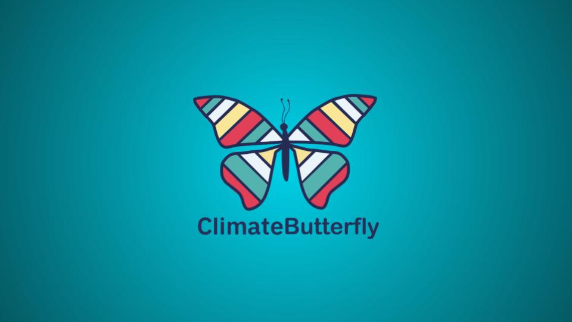
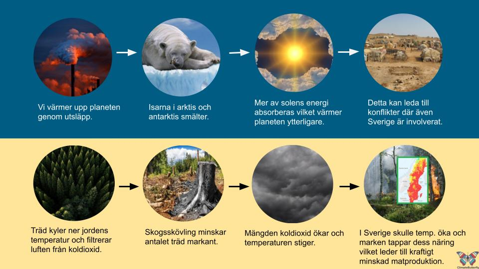
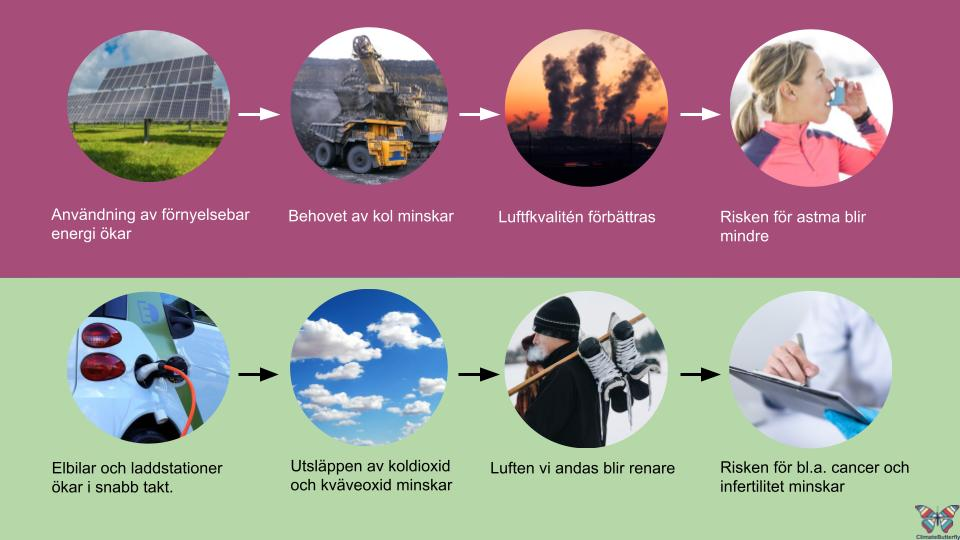

Climate View

Empati

Definera

Idégenerera

Prototyp
Uppdrag
“How to visualize climate data in an understandable way to the general public?” Detta var frågan som jag och tre andra studenter från Nackademin undersökte. Klienten var företaget Climate View under vår kurs “Analys och stategi”. Ändamålet med kursen var att djupdyka ner i första faserna av “design thinking” - empati, definera och idégenerera.
Viktiga insikter
Projekt
En hel del metoder användes i projektet. Något som var värdefullt för oss var VPC (Value proposision canvas) då metoden visade på värdet av tjänsten.
Kognitiv dissonans ligger bland annat till grund för inaktivitet hos befolkningen när det gäller betéendeförändringar för att förbättra klimatet. Denna insikt ligger till grund för lösningen som togs fram.
Arbetetsprocessen
För att undvika bias och höja pålitligheten i vårt analysarbete valde vi att göra tematisk analys individuellt för att sedan jämföra våra insikter.
Då kursen tog upp Effektkarta och Impact map så valde vi att testa båda metoderna. Då impact map tar fram Deliverables och Effekartan tar fram effektmål och mätpunkter så passade Effkartan oss bättre i detta projekt.
Strategi
Vi valde att fokusera på två olika grupper. Noviser och experter inom klimatområdet. Detta för att få en så bred uppfattning som möjligt. I projketet låg vårt fokus på kvalitativ metod i form av intervjuer. Parallellt med det kvalitativa arbetet valde vi att samla in kvantitativ data i form av enkäter då vi hade möjlighet till det. Det intressanta var att undersökningarna var motsägande. Varför gick svaren åt olika håll? Vad gick fel i vår undersökning? Enkäterna erbjöd ett begränsat antal svaralternativ och en möjlig förklaring kan vara confirmation bias. Det vill säga att i detta fall är det sannolikt att svaralternativ som valts endast stödjer förutfattade meningar. På grund av kursens begränsning valde vi att fortsätta med insikterna från den kvalitativa datan som vi bedömde mest pålitlig.
Rekommendation
Insikterna pekade på hur individen påverkas när klimatförändringar har direkt effekt. Vi landade i en lösning för så väl noviser som experter. Ett verktyg som visar både positiva och negativa kedjereaktioner. Effekter som är direkt kopplade till individen. Vi kallar detta vertyg för ClimateButterfly.
Visualisering
Ogynsamma förändringar
Gynsamma förändringar
